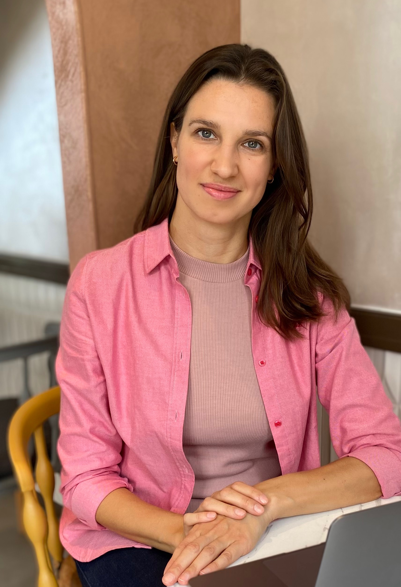

Практикующий психолог Татьяна Трушина
Записаться на консультациюОбо мне
Здравствуйте! Меня зовут Татьяна, я практикующий психолог. Провожу индивидуальные консультации для взрослых очно и онлайн. Работаю как в формате краткосрочных психологических консультаций, так и в формате глубокой долгосрочной терапии, направленной на коррекцию характера и личностный рост.
Моя работа направлена на Ваш результат, поэтому я использую наиболее подходящие методы и техники в зависимости от Вашего запроса и Ваших индивидуальных особенностей.

В процессе консультирования я сочетаю различные психологические направления и подходы - техники телесно-ориентированного подхода, клиент-центрированного подхода, когнитивно-поведенческой терапии, эмоционально-образной терапии и гештальт-терапии.
Если Вы столкнулись с жизненной ситуацией, с которой Вам трудно справиться в одиночку, Вы можете смело рассчитывать на мою профессиональную помощь и поддержку.
Обо мне
Здравствуйте! Меня зовут Татьяна, я практикующий психолог. Провожу индивидуальные консультации для взрослых очно и онлайн. Работаю как в формате краткосрочных психологических консультаций, так и в формате глубокой долгосрочной терапии, направленной на коррекцию характера и личностный рост.
Моя работа направлена на Ваш результат, поэтому я использую наиболее подходящие методы и техники в зависимости от Вашего запроса и Ваших индивидуальных особенностей.

В процессе консультирования я сочетаю различные психологические направления и подходы - техники телесно-ориентированного подхода, клиент-центрированного подхода, когнитивно-поведенческой терапии, эмоционально-образной терапии и гештальт-терапии.
Если Вы столкнулись с жизненной ситуацией, с которой Вам трудно справиться в одиночку, Вы можете смело рассчитывать на мою профессиональную помощь и поддержку.
Обо мне
Здравствуйте! Меня зовут Татьяна, я практикующий психолог. Провожу индивидуальные консультации для взрослых очно и онлайн. Работаю как в формате краткосрочных психологических консультаций, так и в формате глубокой долгосрочной терапии, направленной на коррекцию характера и личностный рост.
Моя работа направлена на Ваш результат, поэтому я использую наиболее подходящие методы и техники в зависимости от Вашего запроса и Ваших индивидуальных особенностей.

В процессе консультирования я сочетаю различные психологические направления и подходы - техники телесно-ориентированного подхода, клиент-центрированного подхода, когнитивно-поведенческой терапии, эмоционально-образной терапии и гештальт-терапии.
Если Вы столкнулись с жизненной ситуацией, с которой Вам трудно справиться в одиночку, Вы можете смело рассчитывать на мою профессиональную помощь и поддержку.
Обо мне
Здравствуйте! Меня зовут Татьяна, я практикующий психолог. Провожу индивидуальные консультации для взрослых очно и онлайн. Работаю как в формате краткосрочных психологических консультаций, так и в формате глубокой долгосрочной терапии, направленной на коррекцию характера и личностный рост.
Моя работа направлена на Ваш результат, поэтому я использую наиболее подходящие методы и техники в зависимости от Вашего запроса и Ваших индивидуальных особенностей.
В процессе консультирования я сочетаю различные психологические направления и подходы - техники телесно-ориентированного подхода, клиент-центрированного подхода, когнитивно-поведенческой терапии, эмоционально-образной терапии и гештальт-терапии.
Если Вы столкнулись с жизненной ситуацией, с которой Вам трудно справиться в одиночку, Вы можете смело рассчитывать на мою профессиональную помощь и поддержку.
Моё образование


Чем я могу помочь
-
Отношения с собой
- вопросы самооценки
- профессиональное самоопределение
- стресс и трудные эмоциональные состояния
- психосоматические расстройства
-
Отношения в семье
- помощь молодым родителям
- семейные кризисы
- сложности в детско-родительских отношениях
- сложности в отношениях с супругом/супругой
-
Отношения с другими
- сложности коммуникации
- раздражительность и агрессивность
- чувство вины и стыда
- сложности в отстаивании своих границ
-
Последствия психотравмирующих событий
- потеря близкого человека
- расставание/развод
- анализ травматических ситуаций прошлого и их влияния на настоящее
- поддержка и сопровождение в кризисных ситуациях
Стоимость


Если у Вас остались какие-либо вопросы, Вы всегда можете связаться со мной, и я с удовольствием на них отвечу.